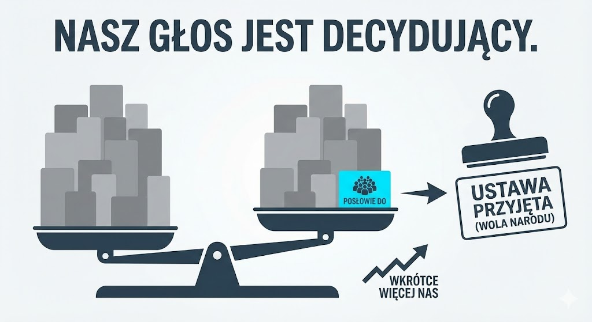
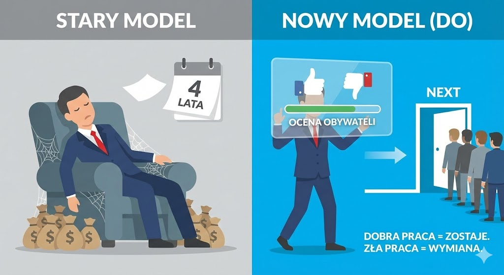

|
|
Wyobraź sobie, że znów będzie głosowana jakaś ważna i kontrowersyjna ustawa. Wyobraź sobie, że jako OBYWATEL, możesz brać udział w tym głosowaniu! Jak? W aplikacji. Klikasz tak lub nie, jak uważasz. Nowe podatki, kolejny nowy bezwład: tak - nie. Aborcja: tak - nie. Strefa Czystego Transportu w Twoim mieście: tak - nie. Itd. |
|
Niemożliwe? To wyobraź sobie, że w sejmie są posłowie, którzy MUSZĄ zagłosować tak jak oczekuje tego społeczeństwo. Dlaczego muszą? Bo zanim mogli wystartować do parlamentu to podpisali umowę ze społeczeństwem - weksel na naprawdę dużą kasę. Nie wykonują woli społeczeństwa? Są usuwani i bankrutują, na ich miejsce przychodzą inni, lepsi. Władza przestaje traktować nas jak dzieci. Władza zaczyna wykonywać naszą wolę. |
|
|

|
Głosują więc zgodnie z wolą społeczeństwa. Na początku jest ich mniej ale stanowią języczek u wagi i ich głosy są decydujące. Mamy to! Projekt wyraża wolę narodu. Później będzie ich więcej bo społeczeństwo przekona się do nowego modelu. |
|
Wyobraź sobie, że parlament nie mrozi już ale proceduje projekty społeczne i przyjmuje wolę społeczeństwa. To pozwoli szybko zamknąć sprawy ciągnące się od dekad. I przejść DO Przodu! Rozwój a nie jak chomik w kołowrotku. |
|
|

|
Wyobraź sobie, że Twój “wybraniec” się nie sprawdził. Dziś nic z tym nie zrobisz - siedzi x lat na stołku i bierze kasę. W nowym modelu możesz go oceniać regularnie. I jeśli większość uważa, że robi dobrą robotę to zostaje, nawet na wiele kadencji. Jeśli nie to się żegna a na jego miejsce wchodzi kolejny z listy. |
Ruch DO
Demokracja Obywatelska - DO Przodu
Anatomia iluzji: Dlaczego twój głos liczy się tylko przez 5 sekund raz na 4 lata?
Czy kiedykolwiek zastanawiałeś się nad matematyką swojej wolności?
Spójrzmy na liczby, bo one nie kłamią – w przeciwieństwie do politycznych obietnic. Jedna kadencja parlamentu to równe cztery lata. To dokładnie 1461 dni, czyli 35 064 godziny. Idąc głębiej: to 2 103 840 minut lub – dla uzyskania pełnego obrazu – 126 230 400 sekund.
W obecnym układzie, który nazywamy demokracją przedstawicielską, ty – jako konstytucyjny suweren, czyli teoretyczny właściciel i najwyższy decydent w państwie – masz realny wpływ na rzeczywistość przez około pięć sekund. Tyle zajmuje postawienie znaku „x” na karcie wyborczej. Przez pozostałe 126 230 395 sekund jesteś tylko widzem, płatnikiem podatków i pasywnym odbiorcą decyzji podejmowanych za zamkniętymi drzwiami, do których nie posiadasz klucza.
Witamy w anatomii iluzji. To nie jest kolejny tekst o polityce, jaką znasz z wieczornych wiadomości. To analiza wadliwego kodu źródłowego naszego państwa.
Cyfrowy gigant, polityczny karzeł
Żyjemy w czasach bezprecedensowego pęknięcia między tym, co potrafimy jako jednostki, a tym, na co pozwala nam system. W twojej kieszeni spoczywa urządzenie o mocy obliczeniowej miliony razy większej niż komputery, które wysłały człowieka na Księżyc. Za pomocą kilku przesunięć palcem po ekranie zarządzasz dziś całym swoim mikroświatem. Bez wychodzenia z domu inwestujesz na rynkach światowych, uczysz się od profesorów z najdalszych zakątków globu czy zarządzasz oszczędnościami całego życia. Technologia dała nam sprawczość, o której poprzednie pokolenia nie mogły nawet marzyć. Staliśmy się dorosłymi, autonomicznymi jednostkami w niemal każdym aspekcie codzienności. Z jednym, rażącym wyjątkiem: sposobu, w jaki jesteśmy rządzeni.
W sferze publicznej czas nagle cofa się o dwa stulecia. Mechanizm działania naszego państwa to technologiczny skansen. Fundamenty dzisiejszej logistyki wyborczej wylano w XIX wieku, w epoce lamp naftowych i dyliżansów pocztowych. W tamtych czasach model „wybierz przedstawiciela i zapomnij” miał swoje twarde uzasadnienie. Informacja podróżowała z prędkością konia, a logistyka zliczania papierowych głosów uniemożliwiała częstsze konsultacje. Oddawaliśmy władzę elitom, bo tylko one miały fizyczny dostęp do wiedzy i czas na debatowanie w odległej stolicy.
Dziś utrzymywanie tego modelu przy życiu to nie tylko anachronizm – to cywilizacyjny sabotaż, który kosztuje nas miliardy złotych i lata zmarnowanych szans. Skoro ufasz sobie na tyle, by zarządzać własnym budżetem przez aplikację bankową, dlaczego system zakłada, że nie jesteś zdolny współdecydować o podatkach czy edukacji swoich dzieci? Dlaczego w świecie natychmiastowej komunikacji wciąż używamy procedur zaprojektowanych dla epoki dyliżansu?
Teatr demokracji fasadowej i szantaż emocjonalny
Współczesna polityka przestała być procesem wypracowywania najlepszych rozwiązań dla kraju. Stała się wyrafinowaną gałęzią przemysłu rozrywkowego, zasilaną przez marketing i badania opinii publicznej. Partie polityczne nie są już inkubatorami idei, lecz korporacjami nastawionymi na jeden cel: utrzymanie lub zdobycie władzy. Wybory przypominają dziś kupowanie „kota w worku” w luksusowym opakowaniu. Raz na cztery lata stajemy przed półką, na której leżą dwa niemal identyczne produkty: pakiet A i pakiet B. Każdy z nich to zamknięta całość – tysiące stron ustaw, setki nazwisk i dziesiątki ideologicznych naklejek. Nie możesz wybrać niskich podatków z jednego pakietu i nowoczesnej edukacji z drugiego. Musisz kupić wszystko naraz, wraz z całą masą toksycznych dodatków, których szczerze nienawidzisz.
To nie jest wybór – to szantaż emocjonalny. Większość z nas nie głosuje już z nadzieją na lepszą przyszłość, ale ze strachu przed zwycięstwem przeciwnika. Polityka karmi się tym konfliktem, bo strach jest najtańszym paliwem wyborczym. W efekcie podpisujesz in blanco czek na cztery lata. Polityk, który jeszcze wczoraj obiecywał „być twoim głosem”, w momencie wejścia do sejmu przechodzi przemianę. Jego lojalność przesuwa się z wyborcy na lidera partii. To od woli przewodniczącego zależy jego miejsce na liście w kolejnym rozdaniu, a nie od twojego zadowolenia z jego pracy. Twoja rola kończy się na wrzuceniu kartki do urny. Od tego momentu stajesz się pasażerem w autobusie, w którym zablokowano drzwi, a kierowca ignoruje twoje prośby o zmianę trasy, mimo że jedzie prosto w przepaść.
Błąd architektury: To nie ludzie, to system
Powszechna frustracja, którą czuje dziś większość społeczeństwa, nie wynika z faktu, że wszyscy politycy są z natury źli. To błąd w ocenie sytuacji. Od dekad zmieniamy twarze na ekranach telewizorów, rotujemy partie i ogłaszamy kolejne „nowe otwarcia”. Efekt? Mechanizm pozostaje niezmienny. Problemem nie jest obsada aktorska, ale sam scenariusz i konstrukcja sceny.
Obecny ustrój posiada wbudowany błąd projektowy: całkowity brak pętli zwrotnej w czasie rzeczywistym. W inżynierii czy biznesie system bez możliwości bieżącej korekty po prostu ulega przegrzaniu i rozpada się. Gdyby prezes firmy nie słuchał klientów przez cztery lata, jego przedsiębiorstwo przestałoby istnieć w jeden kwartał. W polityce jednak raz zdobyta władza staje się niezależna od wyborcy na cały okres kadencji. To rodzi naturalne patologie: arogancję, brak odpowiedzialności i całkowite oderwanie od rzeczywistości. Tworzy się kasta „onych” i masa „nas”. Ta relacja jest w swojej istocie feudalna, choć ukryta pod warstwą nowoczesnego PR-u. W erze powszechnego dostępu do informacji i technologii zapewniających bezpieczeństwo danych, utrzymywanie modelu zarządzania państwem z poprzedniej epoki jest jak próba uruchomienia najnowszej gry na starym, zakurzonym komputerze. System po prostu się zawiesza.
Przebudzenie suwerena i nowa cywilizacja decyzyjna
Ruch Demokracja Obywatelska – DO Przodu nie powstał po to, by obiecać ci, że „my będziemy rządzić lepiej”. Stare partie obiecują to od 30 lat i każda zawodzi tak samo. Naszą misją jest powiedzieć ci prawdę, przed którą obecny układ drży: nikt nie będzie zarządzał twoim państwem lepiej niż ty sam w sprawach, które determinują twoją codzienność.
Nie proponujemy kolejnej poprawki do obecnej ustawy. Proponujemy całkowitą wymianę silnika. Chcemy zainstalować w Polsce uniwersalny “system operacyjny” dla nowoczesnego społeczeństwa – nazwijmy go roboczo systemem sprawczości obywatelskiej z nowoczesną aplikacją. Co to oznacza w praktyce? To przejście z relacji „rodzic-dziecko”, gdzie państwo poucza cię, jak masz żyć, na relację „dorosły-dorosły”. W tym modelu polityk przestaje być twoim panem na cztery lata. Staje się twoim wykwalifikowanym pracownikiem – łącznikiem między tobą a instytucjami, rozliczanym z każdego zadania. Wyobraź sobie narzędzie w twoim telefonie, równie bezpieczne jak bankowość internetowa. Każda kluczowa zmiana, która ma realny wpływ na twój portfel, twoją wolność czy edukację twoich dzieci, trafia tam do twojej akceptacji. Widzisz jasną symulację skutków: „jeśli zagłosujesz za tą ustawą, twoje zarobki wzrosną o X, ale koszty życia w obszarze Y również pójdą w górę”. To jest prawdziwa sprawczość. To jest odzyskanie tych brakujących 126 milionów sekund, w których do tej pory nie miałeś nic do powiedzenia.
Czas na decyzję: Ewolucja albo stagnacja
To nie jest utopijna wizja marzycieli. To konieczna ewolucja. Tak jak monarchia musiała ustąpić miejsca parlamentaryzmowi, bo nie nadążała za tempem rewolucji przemysłowej, tak dzisiejsza demokracja gabinetowa musi ustąpić miejsca demokracji hybrydowej, by sprostać wyzwaniom ery cyfrowej. Polska ma unikalną szansę, by stać się światowym liderem tego rozwiązania. Mamy odpowiednią infrastrukturę technologiczną, znakomitych specjalistów i – co najważniejsze – rekordowy poziom nieufności do obecnej klasy politycznej. To idealne warunki do przeprowadzenia wielkiej przebudowy ustrojowej.
W roku 2027 nie będziemy cię prosić o głos na „lepszych ludzi”. Poprosimy cię o głos na system, który sprawi, że to, czy polityk jest „dobry” czy „zły”, przestanie mieć decydujące znaczenie. Bo to ty będziesz trzymał rękę na pulsie państwa.
Demokracja Obywatelska – DO Przodu. Przestań być tylko pasażerem. Czas, abyś to ty usiadł za kierownicą własnego państwa. Czy jesteś gotowy, by wreszcie w pełni skorzystać ze swojej wolności?